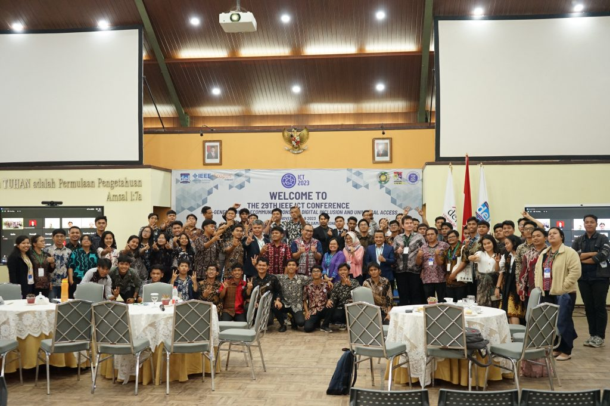

BERITA |
|||
| No | Gambar | Judul | Deskripsi |
|---|---|---|---|
| 1 |  |
Kuliah Umum oleh Konsulat Amerika Serikat terkait Suku Asli Amerika Serikat | Pada hari Jumat, 24 November 2023 Institut Teknologi Del menerima kunjungan dari Ibu Kristy Mordhorts (Konsulat Amerika Serikat di Medan). Kunjungan ini disambut baik oleh IT Del yang diwakili oleh […] |
UPCOMING EVENT |
|||
| No | Gambar | Judul | Deskripsi |
| 1 |


|
UPCOMING EVENT | Akan Datang: Jangan lewatkan event dan kegiatan menarik berikutnya! Kami sangat bersemangat untuk menyambut Anda dalam acara spesial kami. Gabunglah dengan kami untuk pengalaman yang tak terlupakan, diisi dengan kegembiraan, pembelajaran, dan kesempatan untuk bertemu orang-orang hebat. Tetap terhubung untuk informasi lebih lanjut dan detail acara.. |
| 2 | 
|
Keunggulan | Tingkat kedalaman dan keluasan materi pembelajaran untuk setiap program pendidikan yang diselenggarakan di IT Del, dirumuskan dengan mengacu pada deskripsi capaian pembelajaran lulusan dari Kerangka Kualifikasi Nasional indonesia (KKNI). Kurikulum pendidikan IT Del disusun mengacu pada empat paradigma: Pendidikan [1] berbasis pada capaian dan produk yang secara eksplisit dan terukur menetapkan capaian yang harus diraih lulusan setelah menempuh pendidikan di IT Del; |
| 3 | 
|
Beasiswa | Beasiswa Prestasi Beasiswa Prestasi adalah jenis beasiswa yang diperoleh dari nilai IPK akhir semester per tahun ajaran yang diakumulasikan mendapat voucher Beasiswa SPP berdasarkan ketentuan akademik dari IPK perihal dana beasiswa prestasi. Beasiswa ini berlaku bagi seluruh mahasiswa IT Del setiap semester. |
BERITA TERKINI |
|||
| No | Gambar | Judul | Deskripsi |
| 1 |  | Informasi Terkini terkait Institut Teknologi Del | IT Del Menjadi Tuan Rumah 29th IEEE ICT Conference. |
PENERIMAAN MAHASISWA BARU |
|||
| No | Gambar | Judul | Deskripsi |
| 1 | 
|
Informasi PMB Jalur Ujian Saring Masuk 2 (USM 2) 2023 & Jadwal Pelaksanaan Kegiatan | Ujian Saring Masuk (USM) adalah salah satu jalur penerimaan mahasiswa baru […] |